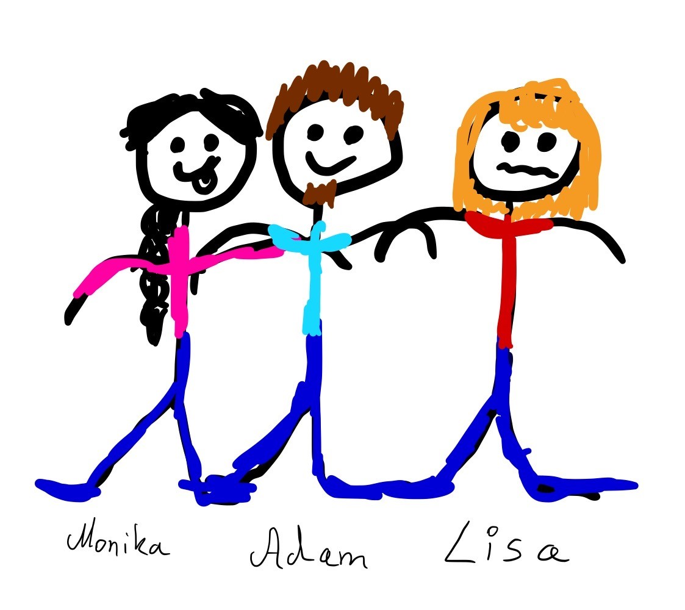

Hier finden Sie alles über uns und unsere Arbeit
Sollten Sie Fragen haben, kontaktieren Sie uns gerne. Unsere Öffnungszeiten und Kontaktdaten finden Sie unter Kontakt.
Unser Team
Wir sind ein meist kleines Team von Ehrenamtlichen. Nur 3 von uns sind fest eingebunden um für Stabilität in den Abläufen zu sorgen. Ein Bild von uns siehst du hier drunter. Von jung bis alt kann jeder bei uns mithelfen. Wenn auch Du unserem Team beitreten willst dann nutze gern das Kontaktformular. Wir melden uns dann schnellstmöglich zurück.
Unsere Arbeit
Wir helfen Menschen in Krisengebieten. Wir bringen Kleidung, die sie wärmen und schützen soll. Wir sind ein ehrenamtlicher gemeinnütziger Verein. Der sich mit der Logistik und der Organisation von Kleiderspenden beschäftigt. Wir Arbeiten aber auch eng mit anderen Organisationen zusammen, die Essen oder auch Geldspenden sammeln und verteilen. Mit ihnen Planen wir die Transporte der Spenden zu ihren Zielorten.